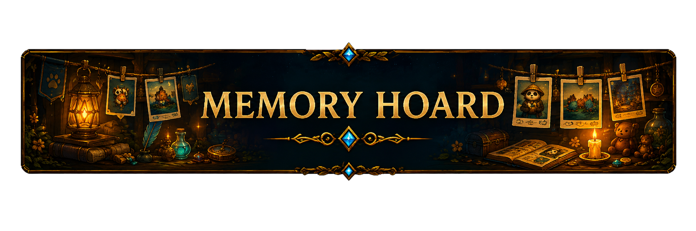

The Screenshot Pile
A gallery for raid kills, guild events, transmogs, pets, and cursed Discord screenshots.
Discord image uploads
A static GitHub Pages site cannot directly listen to a Discord channel by itself. The clean way is to use a small Discord bot or automation that watches one channel, saves image attachments into this repo, and updates assets/gallery/gallery.json. I included the gallery file so this site is ready for that workflow.